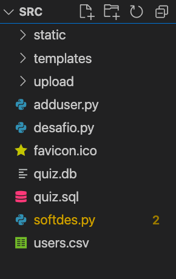

Guia para desenvolvedores
Configurando o ambiente
Para fazer alterações neste projeto, será necessário a instalação dos seguintes programas:
- Python 3.9
- flask
- flask_httpauth
- SQL
- SQLite
Instalação das Bibliotecas do Python
É possível instalar as bibliotecas necessárias presentes no arquivo requirements.txt com:
pip install -r requirements.txt
Caso você não possua pip, instala-se ele a partir desta página: pip
Para o SQLite3, utiliza-se esta fonte: sqlite3
Os arquivos estão localizados na pasta /src, possuindo a seguinte estrutura:

Estrutura de código Alto nível
Cada arquivo exerce uma função específica importante para o funcionamento do projeto. Vamos descrever cada um deles
softdes.py
Possui toda a lógica por trás do servidor flask que é utilizado. Nele possuem funções comuns de rotas Web tanto quanto funções que conversam com o banco de dados SQLite.
desafio.py
Serve para simular a entrega de um aluno, ou seja, é um função simples para testar se o que foi enviado está sendo executado corretamente.
users.csv
Contém informação do usuário a ser adicionado
adduser.py
Cria a conexão com o banco de dados e adiciona um usuário a partir do arquivo users.csv
quiz.sql
Arquivo SQL que cria as tabelas necessárias para o funcionamento da ferramenta, além de inserir um valor test ao final do arquivo